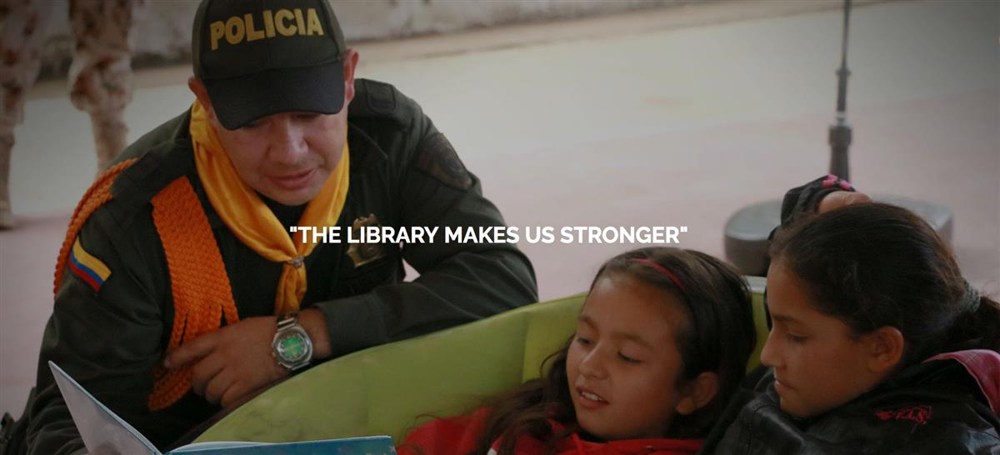
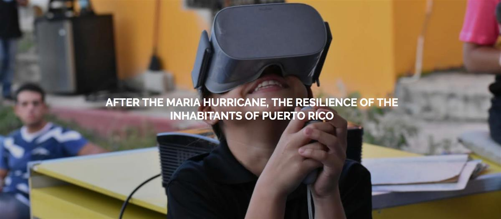
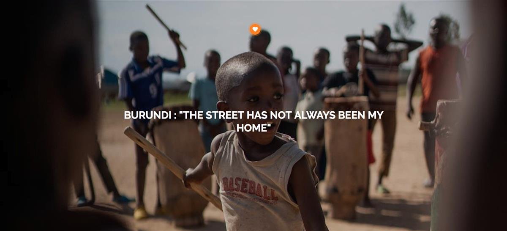
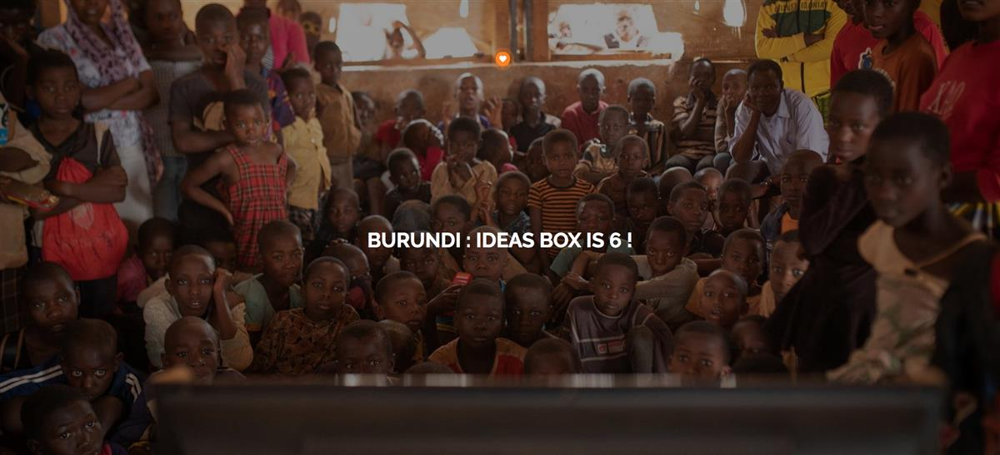

Bringing access to knowledge where it's most needed
Since 2007, Bibliothèques Sans Frontières has worked to bring knowledge and information to those who are most in need. Libraries are simultaneously excellent places for personal growth and collective development. However, they are too often absent where they could have the most impact.
Because lack of access to information is an important driver of inequality in today’s world, we work in 23 languages, in 50 countries across the globe, and have curated more than 28,000 sources of knowledge and information. These allow us to address some of the most important issues of our world today : education, health, employment, citizenship, environment and sustainability, disability, and technology.
Our work stands halfway between a humanitarian NGO that intervenes in the most difficult situations and a social enterprise that helps local and national governments diffuse knowledge where it is most needed. The diversity of our actions is our strength. Every day, we strive to give everyone the capacity to be free and autonomous, and to make decisions that help realize their aspirations.
SOURCE: Bibliothèques Sans Frontières - Libraries Without Borders




SOURCE: Bibliothèques Sans Frontières